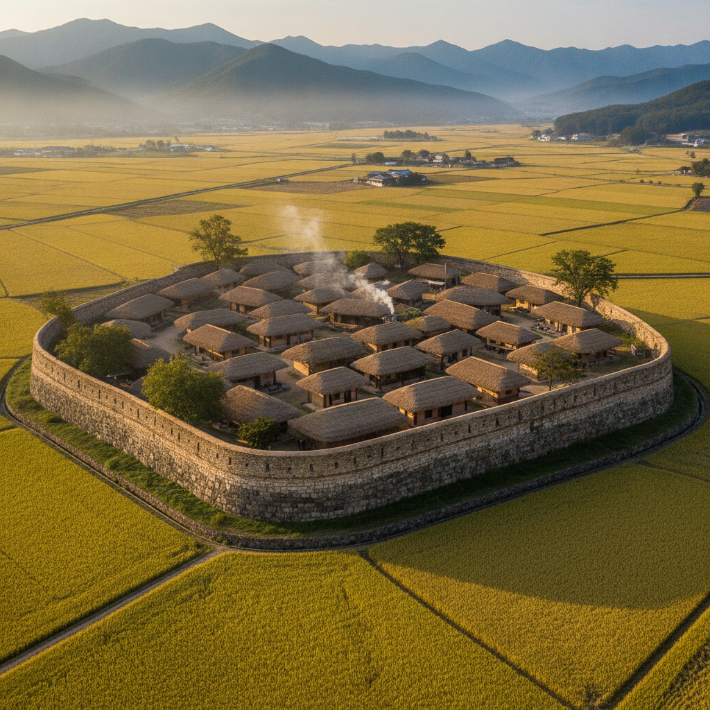
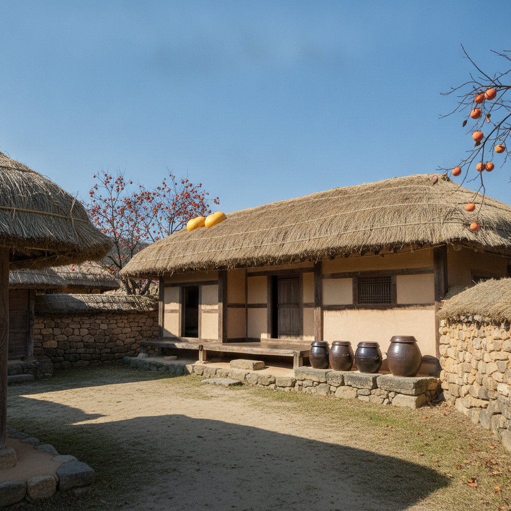

순천 낙안읍성 가을 한옥 나들이 — 황금들녘 전망대 위치와 입장료 주차 비교 체크리스트
누렇게 익어가는 벼가 황금빛 물결을 이루는 9월 말과 10월 초는 조선 시대 전통 초가마을의 원형을 고스란히 간직한 전남 순천 낙안읍성을 찾기에 가장 아름다운 시기입니다. 2026년 기준 낙안읍성 입장료는 성인 4,000원, 청소년 2,500원, 어린이 1,500원이며, 넓게 조성된 공영주차장은 전면 무료로 운영되어 부담 없이 방문할 수 있습니다.
특히 읍성을 둘러싼 석성 서문 부근의 전망대 계단 위에 올라서면 옹기종기 모여 있는 300여 채의 둥근 초가지붕과 성곽 너머 끝없이 펼쳐지는 황금들녘이 한눈에 내려다보여 감탄을 자아냅니다.
낙안읍성 입장료 할인 조건 및 주차장 비교표와 최고의 인생 사진을 남길 수 있는 전망대 명당 위치, 그리고 벌교 꼬막거리와 연계한 가을 남도 드라이브 체크리스트를 확인해 보세요.

낙안읍성 성곽 너머로 끝없이 펼쳐지는 가을 황금들녘과 초가마을 전경 / AI 제작 이미지
01 | 600년 조선의 시간이 멈춘 살아있는 초가마을 순천 낙안읍성
전라남도 순천시 낙안면에 위치한 낙안읍성(사적 제302호)은 조선 태조 6년(1397년) 왜구의 침입을 막기 위해 김빈길 장군이 토성을 쌓은 것에서 시작되어, 인조 때 임경업 장군이 석성으로 중수하며 오늘날의 모습을 갖추었습니다.
전국의 다른 민속촌들이 전시용 가옥으로 꾸며진 것과 달리, 낙안읍성은 현재도 90여 가구, 220여 명의 실제 주민들이 초가집에서 생활하며 전통 농경문화를 이어가고 있는 '살아 숨 쉬는 민속마을'입니다.
돌담길 사이로 붉은 감이 주렁주렁 매달리고 박넝쿨이 초가지붕을 덮고 있는 가을날의 골목길은 발길 닿는 곳마다 아늑하고 따뜻한 고향의 정취를 전해줍니다. 유네스코 세계문화유산 잠정목록에 등재될 만큼 역사적·민속학적 가치 또한 높게 평가받고 있습니다.
02 | 9월 하순 성곽길 위에서 내려다보는 황금들녘과 볏짚 지붕 파노라마
낙안읍성의 가을이 특별한 이유는 마을을 둘러싼 성곽 너머로 드넓게 펼쳐지는 낙안평야의 '황금들녘' 덕분입니다. 9월 하순부터 10월 중순까지 들판 전체가 찬란한 황금빛으로 물들며 가을의 풍요로움을 노래합니다.
성곽길을 따라 천천히 걸음을 옮기면 둥글둥글한 초가지붕들과 돌담, 장독대, 빨갛게 익어가는 고추 말리는 마당 풍경이 한눈에 파노라마처럼 펼쳐집니다.
이른 아침에는 백이산과 금전산 자락에서 피어오르는 부드러운 아침 물안개와 밥 짓는 굴뚝 연기가 어우러져 한 폭의 진경산수화를 감상하는 듯한 몽환적인 감동을 선사합니다.
03 | 낙안읍성 최고의 인생샷 포토스팟 서문 성곽 전망대 찾아가는 길
낙안읍성을 방문했다면 SNS와 여행 잡지에서 대표 컷으로 등장하는 '서문 성곽 전망대'를 반드시 찾아가야 합니다.
동문(낙풍루)이나 남문(쌍청루)으로 입장한 후 성곽을 따라 서쪽 방향으로 약 10~15분 정도 걸어가면, 성벽이 남북으로 꺾이며 지대가 가장 높아지는 서문(낙추문) 인근의 자연 전망 포인트에 도달합니다.
성벽 위 좁은 통로를 따라 조성된 돌계단 위에 서면 아래쪽 마을의 초가지붕들이 부챗살처럼 아기자기하게 펼쳐지고, 그 뒤로 웅장한 금전산의 기암괴석과 황금들판이 완벽한 구도를 형성합니다. 오전 9시 전후의 사광이나 해지기 1시간 전 늦은 오후의 역광 시간에 방문하면 따뜻한 가을 감성의 인생 사진을 건질 수 있습니다.

돌담 너머 주렁주렁 매달린 감나무와 정겨운 초가집 장독대 풍경 / AI 제작 이미지
04 | 낙안읍성 입장료 감면 조건과 주차장 위치 및 요금 비교표
순천시는 관광객 편의를 위해 체계적인 요금 체계와 넓은 무료 주차 인프라를 제공하고 있습니다.
| 구분 |
개인 일반 요금 |
단체 요금 (20인 이상) |
무료 및 감면 대상 |
주차장 요금 |
| 성인 (만 19세~64세) |
4,000원 |
3,000원 |
만 65세 이상 경로우대 (신분증 필수) |
승용차·대형버스 전액 무료 |
| 청소년 및 군경 |
2,500원 |
2,000원 |
국가유공자, 장애인 복지카드 소지자 |
동문·남문 대형주차장 완비 |
| 어린이 (만 7세~12세) |
1,500원 |
1,000원 |
만 6세 이하 미취학 아동 무료 |
전기차 충전기 구비 (급속/완속) |
| 순천시민 및 자매도시 |
50% 감면 (2,000원) |
— |
순천시민, 여수·광양·고흥·보성 주민 |
주말 혼잡 시 임시주차장 운영 |
주차장은 동문 매표소 앞의 '제1주차장'과 남문 쪽의 '제2주차장'이 있으며, 두 곳 모두 주차 요금이 무료입니다. 주말 오전에는 동문 쪽이 혼잡하므로 남문 주차장을 이용하면 훨씬 수월하게 주차할 수 있습니다.
05 | 성곽 둘레길(1,410m) 걷는 순서와 관아·동헌·옥사 주요 문화재 관람 팁
낙안읍성을 둘러싼 석성의 총둘레는 1,410m, 높이는 4~5m에 이릅니다. 성벽 위로 걷는 성곽 둘레길은 약 40분에서 50분 정도 소요되며 읍성의 구조와 입체적인 매력을 느끼는 필수 코스입니다.
성곽길을 한 바퀴 돈 후 마을 내부로 들어서면 조선 시대 지방 행정의 중심이었던 '동헌(사무당)'과 수령의 살림집이었던 '내아', 그리고 죄수를 가두던 원형 감옥 '옥사'를 만나게 됩니다.
옥사 마당에는 형틀과 곤장, 칼 등이 재현되어 있어 관광객들이 직접 곤장 체험을 해보며 유쾌한 기념사진을 남길 수 있습니다. 또한 1597년 정유재란 당시 쌓은 임경업 장군의 공을 기리는 선정비와 유서 깊은 은행나무 거목도 놓치지 말아야 할 역사 유적입니다.
06 | 초가 민박과 천연염색·가야금 전통 민속 체험 프로그램
낙안읍성의 특별한 매력 중 하나는 실제 거주하는 초가집에서 하룻밤을 묵어가는 '초가 민박' 체험입니다.
황토 구들방에 장작을 때어 따뜻하게 데워진 온돌방에서 밤하늘에 쏟아지는 별을 바라보며 풀벌레 소리를 듣는 경험은 도시에서 결코 느낄 수 없는 깊은 힐링을 줍니다. 민박 요금은 2인 기준 5만~8만 원 선으로 매우 합리적입니다.
낮 시간대에는 마을 안쪽 체험 공방에서 쪽빛 물을 들이는 천연염색 체험(1만 원 안팎), 가야금 병창과 판소리 배우기, 짚풀공예로 짚신과 복조리 만들기, 전통 다도 체험 등 오감을 만족시키는 다채로운 민속 프로그램이 상시 운영됩니다.
살이 통통하게 오른 제철 꼬막무침과 남도 팔진미 정갈한 상차림 / AI 제작 이미지
07 | 남도 미식의 정수 꼬막정식과 낙안 전통 팔진미 백반 맛집 추천
순천과 인접한 벌교 여자만 갯벌에서 잡아 올린 꼬막은 가을철부터 살이 통통하게 오르며 쫄깃한 식감과 감칠맛이 최고조에 달합니다.
낙안읍성 정문 앞 먹거리촌에서는 참꼬막, 새꼬막을 살짝 데쳐 낸 통꼬막 삶음, 미나리와 무를 넣고 매콤새콤하게 무쳐낸 꼬막회무침, 바삭하게 부쳐낸 꼬막전, 뚝배기 꼬막된장국까지 한 상 가득 나오는 '꼬막정식(1인 1만 8천 원~2만 3천 원 안팎)'이 대표 인기 메뉴입니다.
또한 과거 낙안 고을에서 임금님께 진상했다는 '낙안 팔진미(八珍味)' 백반(석이버섯, 도라지, 더덕, 미나리, 고사리, 참게, 은어, 꿩고기 등을 활용한 웰빙 산채정식) 역시 정갈하고 깊은 남도의 손맛을 제대로 맛볼 수 있는 추천 별미입니다.
08 | 순천만국습지 갈대밭 및 선암사 단풍길과 묶는 가을 드라이브 루트
낙안읍성 단독 관람(약 2~3시간 소요)에 그치지 않고 순천의 대표 가을 명소를 묶어 완벽한 당일치기 또는 1박 2일 남도 드라이브 코스를 설계할 수 있습니다.
추천 루트는 아침 일찍 유네스코 세계유산 조계산 '선암사'에 들러 무지개다리 승선교와 고즈넉한 단풍 산책로를 걸은 뒤, 차로 15분 거리인 '낙안읍성'으로 이동하여 황금들녘과 초가마을을 둘러보고 꼬막정식으로 점심을 즐깁니다.
오후 15시경에는 은빛 갈대밭이 바람에 일렁이는 '순천만습지(순천만에코촌)'로 이동하여 용산전망대에 올라 황홀한 S자 갯벌 수로의 붉은 일몰 낙조를 감상하는 코스가 가장 완벽한 가을 여행 공식입니다.
09 | 순천 낙안읍성 가을 당일치기 관람 준비물과 동선 체크리스트
여유롭고 만족스러운 낙안읍성 여행을 위한 필수 체크리스트를 제안합니다.
📅 순천 가을 당일치기 베스트 코스
· 10:00 ~ 11:00 : 조계산 선암사 승선교 숲길 산책 및 삼층석탑 관람
· 11:30 ~ 13:00 : 낙안읍성 입구 맛집거리에서 제철 벌교 꼬막정식 점심 식사
· 13:00 ~ 15:30 : 낙안읍성 동문 입장 → 서문 성곽 전망대 황금들녘 감상 → 옥사·동헌 관람
· 16:00 ~ 18:00 : 순천만습지 이동, 갈대밭 데크 산책 및 용산전망대 S자 갯벌 일몰 감상 후 마무리
💡 낙안읍성 방문 필수 체크리스트
1. 신분증 지참 : 경로우대(만 65세 이상) 및 순천시민, 인근 남해안 남중권 지자체 주민 할인 시 신분증 확인이 필수입니다.
2. 편안한 운동화 착용 : 성곽길 바닥이 울퉁불퉁한 자연 석재로 이루어져 있으므로 미끄러지지 않는 편안한 신발을 신으세요.
3. 햇빛 차단 용품 : 성곽 위에는 그늘이 거의 없으므로 챙 넓은 모자나 양산, 선글라스를 미리 챙기시는 것이 좋습니다.
4. 실제 거주민 배려 : 민간 가옥 안으로 무단 침입하거나 소음을 내지 않도록 조용하고 예의 바른 관람 매너를 지켜주세요.
#낙안읍성
#순천낙안읍성
#낙안읍성황금들녘
#낙안읍성전망대
#낙안읍성입장료
#낙안읍성주차비무료
#벌교꼬막정식
#순천가을여행코스
#순천만갈대밭
#남도드라이브코스